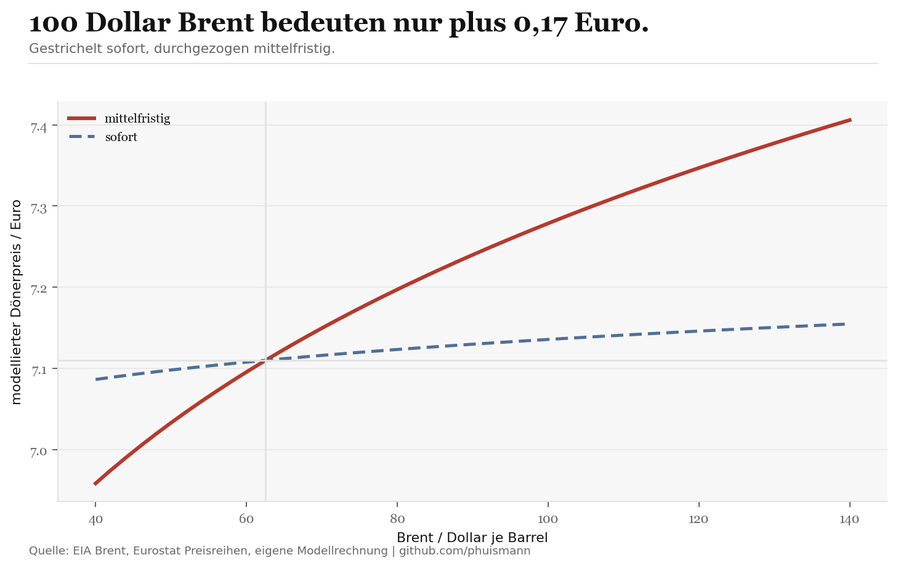
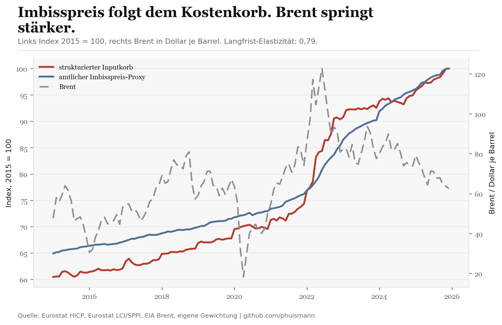

Wenn Brent von 62,54 auf 100 Dollar steigt, hebt der Ölpfad den Referenz-Döner im Modell mittelfristig von 7,11 auf 7,28 Euro. Sofort sind es nur 3 Cent. Der Schock läuft also bis zur Theke. Er läuft nur nicht so direkt und so groß, wie es die Debatte oft nahelegt.
Im Basismodell stecken rund 2,31 Euro Fleisch und 1,97 Euro Arbeit in einem Döner. Verpackung liegt bei 8 Cent. Genau deshalb bleibt der Ölpfad kleiner. Brent trifft erst Diesel, dann Fracht und erst danach einen Teil von Fleisch, Gemüse, Soße und Verpackung.

Der historische Teil des Modells nutzt amtliche Monatsreihen für Deutschland. Fleisch läuft über Beef and veal, Brot über Bread, der Gemüseblock über den offiziellen HICP-Proxy für frisches Gemüse, dazu Verpackung, Strom, Gas, Mieten, Straßenfracht und Löhne. Weil es keinen amtlichen Monatsindex nur für den Döner gibt, kalibriert das Modell auf einen veröffentlichten Durchschnittspreis für den Thekenkauf und prüft ihn gegen den Lieferpreis von 8,03 Euro.

Was wir nicht wissen
Kein amtlicher Datensatz sagt, wie viel Tomate genau in jedem Döner landet oder zu welchem Vertrag ein einzelner Laden Fleisch einkauft. Gewerbemieten unterscheiden sich stärker nach Lage als Wohnmieten. Genau deshalb ist das hier ein Referenz-Döner für Deutschland und kein Claim über jede Theke im Land.
Methode
Das Skript baut erst einen Bottom-up-Korb aus den Einzelkosten auf. Danach schätzt es, wie stark der amtliche Imbisspreis-Proxy historisch auf diesen Korb reagiert. Die Langfrist-Elastizität bestimmt den mittelfristigen Preis. Die Kurzfrist-Elastizität bestimmt den Sofort-Effekt. Die Visualisierung oben skaliert dann die einzelnen Kostenblöcke so, dass ihre Summe genau zu dieser Preisreaktion passt.